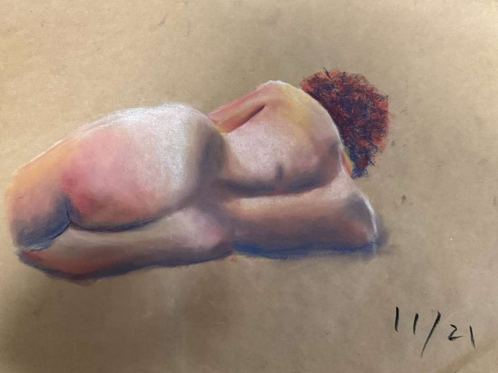

Learning to Loosen My Grip
The difference between caring about something and trying to control every part of it.

Effort is not always attention.
When I first came to Wesleyan, I signed up for Drawing I without having done anything close to serious drawing before. I thought drawing was mostly about control: getting every line right, correcting mistakes, and working until the picture looked “perfect.” Then we were assigned a life-size self-portrait, and I threw myself into it.
I spent hours moving between the mirror and the huge sheet of paper. Sometimes I erased the same part of my face five or six times because it still did not look right. I was working hard, but I was also fighting with the drawing. At the time, those felt like the same thing.
One day, my professor came by and asked me to pay attention to the flow of the whole drawing, rather than the time I had spent or the details I had corrected. That stopped me.
I stepped back. Instead of returning immediately to the face, I looked at how the lines connected and how the figure occupied the page. The drawing was still imperfect, but it became less stiff. It finally had some air in it.
The uncomfortable part of that lesson is that effort can look like attention without quite being attention. I had been attending closely to each place I thought was wrong. But a face is not a collection of separately correct features, and a drawing does not become alive simply because there is less left to erase. I could improve a part and still lose sight of what the parts were doing together.
I was working hard,
but I was also fighting
with the drawing.
Understanding is not yet doing.
Later, in private jazz vocal lessons, I ran into the same problem. During improvisation, I tried to plan the notes that would sound “right,” and the result sounded rigid. My professor asked me to stop constructing the phrase and let it come out more naturally. I understood the instruction before I could actually follow it.
That gap matters to me: being able to explain what I should do did not mean I could do it. “Be spontaneous” can become another instruction to execute correctly, another way of monitoring myself. It is difficult to hear what a phrase might become when I am already measuring it against the phrase I hoped to sing.
I do not think the answer is to care less. Drawing and singing both ask for practice, judgment, and the willingness to notice when something is not working. But they also ask for room: for a line to change what I see, or for one note to suggest the next. The work cannot answer back if I have decided in advance exactly what it is allowed to say.
I still have a competitive streak, and I still dislike leaving something in a state of “not good enough.” I have not solved that by learning to draw or sing. What has changed is the question I can ask when I feel myself tightening: am I responding to what is here, or only trying to bring it back to what I planned?